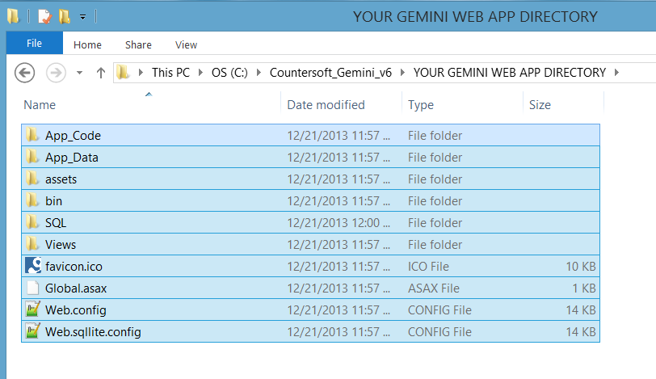
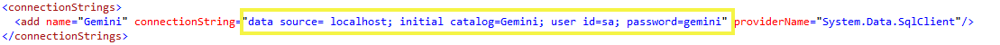
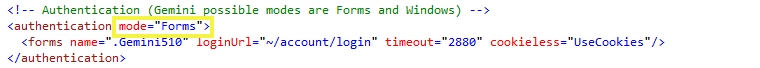

Note If you are upgrading to Gemini 7 you MUST recompile custom apps against the dlls that ship with Gemini 7. Apps built using libraries from previous versions of Gemini will NOT work with version 7.
Note If you are upgrading to Gemini 7 and have built custom apps, you must remove allow partially trusted callers ([assembly: AllowPartiallyTrustedCallers]) if it is in your AssemblyInfo.cs
A zip file download is available containing both the Gemini web application and scripts needed for the upgrade process.
Note We strongly recommend that on-premise customers upgrade a test instance and perform full regression testing before upgrading production. If you are using Breeze Email Ticketing, we recommend archiving all messages in any Gemini mailboxes to another folder before upgrading.
Note Please do not manually execute upgrade SQL scripts - install the new release, browse to the site, and Gemini will auto upgrade the database for you.
Please check you have everything ready for the installation process.
Note Right click on the file then select Properties and click Unblock.
Open the zip file that was downloaded, and open the folder labeled "2. Web App Manual Install". Unzip the Gemini zip file within the folder, and you should see the contents as follows:
Note Stop the application pool for Gemini site in IIS Manager.
Note Please remove all previous files - do not overwrite! Remember to backup your current web app directory. If you have custom templates, copy the contents of App_Data\templates and assets\images\meta folders from your backup folder to the Gemini Web Application folder.
Copy the contents of the Gemini Web Application folder into your current web application folder:

Don't forget Copy your templates back from the backup! They are under the app_data\templates folder.
Edit the new web.config file and put in the correct SQL Server user credentials for your Gemini database:

Remember to set your authentication settings:

Save the web.config and your Gemini should now be upgraded to the latest release.
You can now navigate to the Gemini web application using your browser (e.g. http://myserver/gemini").
For complete administrative control, Gemini requires write access to the following THREE FOLDERS that are located where you installed Gemini:

App_Code folder, select Security tab, allocate Modify/Full Control permissions to the EVERYONE groupApp_Data folder, select Security tab, allocate Modify/Full Control permissions to the EVERYONE groupAssets folder, select Security tab, allocate Modify/Full Control permissions to the EVERYONE groupNote If you are upgrading Gemini 6, DO NOT manually execute upgrade SQL scripts - install the new release, browse to the site, and Gemini will auto upgrade for you. If the SQL user does not have the appropriate user permissions to upgrade Gemini automatically, you will need to grant the appropriate permissions.
If you are upgrading Gemini 5 and the SQL user does not have the appropriate user permissions to upgrade Gemini automatically, you must execute the scripts manually. To do so:
For Example If your current Gemini version is 5.1.2, you will need to run the following upgrade scripts: 5.1.3, 5.1.5, 5.1.6, etc. After running the SQL scripts, start the application pool for Gemini site in IIS Manager.